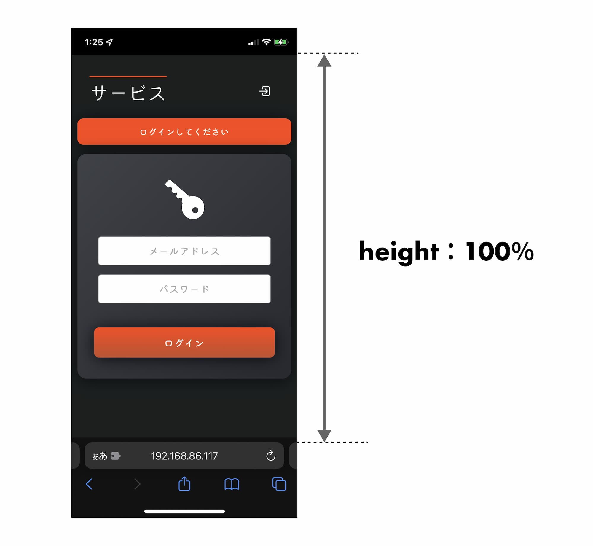
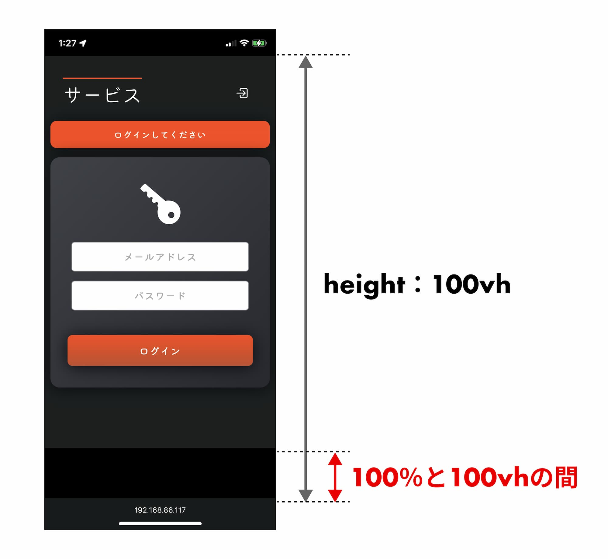

height 100％と100vhの間（iOS）
2021-09-28
サイトを作り始めるとき、大体下記のように height を指定して、背景色が全画面に広がるように指定しますね。
html {
height: 100%;
}
body {
height: 100%;
background: var(--background-color);
}
#root {
height: 100%;
}こうして指定すると、コンテンツの内容が少なく縦幅が足りない場合でも、背景色が画面の下、すなわち URL バー部分まで広がリます。
ちゃんと URL バー部分まで背景色（ダークグレー）が適用されています。
100％と 100vh の間
さて、Safari でブラウザを下方向にスクロールすると、URL バーが縮まることがあります。URL バーが縮まった状態での画面全体の height が「100vh」に対応します。
この「100％と 100vh の間」については、背景色が適用されず、ブラウザの theme-color (MDN)が適用されてしまいます。
これは意図したデザインではありません。かといって、height リレーで100vhを指定すると、URL バーが縮まっていない場面で意味なくスクロール可能になってしまうので、それも避けたいところです。
対応策
今後ベンダープレフィックスや、height: 100％ の解釈が変更されることで解決するかもしれませんが、しばらくは JavaScript で対症療法するのが一番かと思います。
const innerHeight = window.innerHeight;
document.documentElement.style.height = `${innerHeight}px`;コンテンツ量が少なく縦幅が足りないページが表示されるときに、上記を実行しましょう。html のheight: 100%を上書きし、URL バーが縮まった場合でも全画面に背景色が広がるようになります。